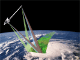
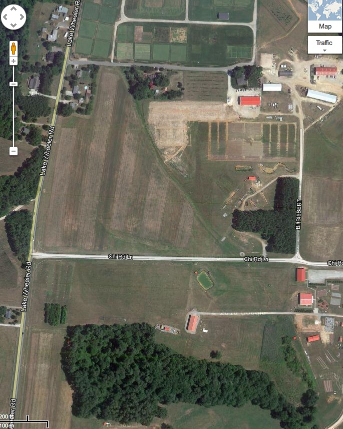
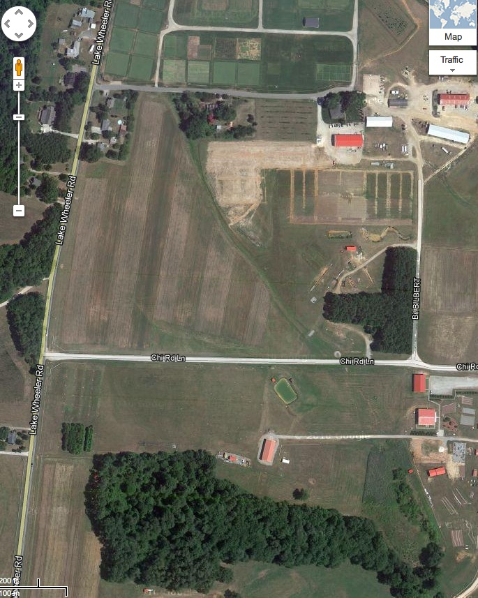
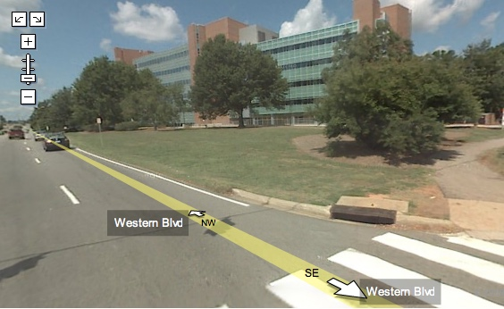
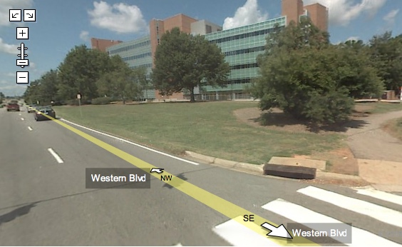
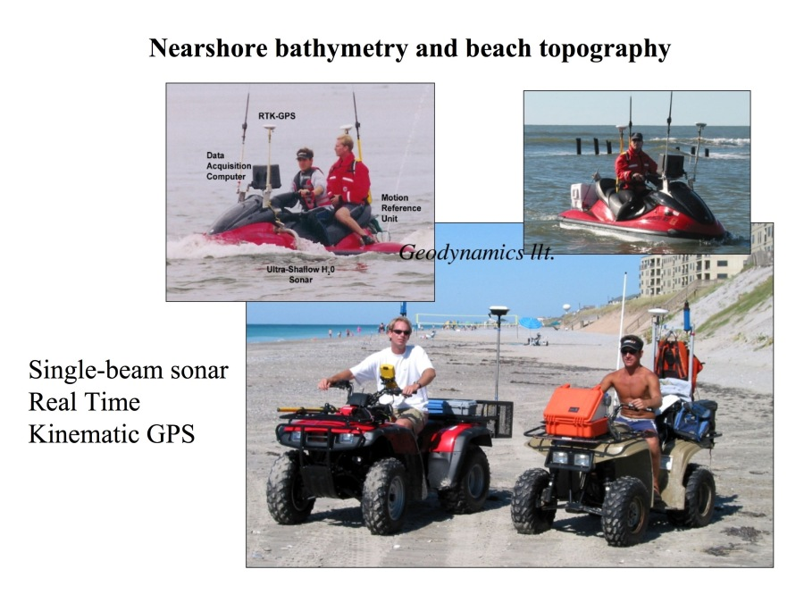

Geospatial data acquisition and integration
Helena Mitasova
Learning objectives
- Understand the diversity of geospatial data sources
- Classify modern mapping technologies
- Understand the concept of georeferenced data
- Explain differences between the basic coordinate reference systems (CRS)
- Use CRS standards to find parameters for a given CRS
- Understand concept of re-projection between CRSs
Geospatial data acquisition
Current revolution in mapping technologies:
continuous data collection anywhere by anyone
Have you ever collected geospatial data?
If yes - share with us where and how
DE students post answers on moodle forum
Professional mapping technologies
- passive and active aerial and satellite sensors
- ground-based surveys : (RTK)GPS, total station, lidar
- in situ sensors: e.g., air quality, river stages, water quality, soil moisture
Emergence of autonomous platforms: air, ground, water

Satellite Remote Sensing
SRTM and LANDSAT example for Panama:



Satellite Remote Sensing
PLANET images for Jockey's Ridge change between September 2017 and July 2018 mapped at 3m resolution:
Data by planet.com
Airborne Remote Sensing
Lidar and orthophoto example for NCSU fields - sub-meter resolution mapping:
 

Most current systems combine active and passive sensors
Airborne Remote Sensing
Small unmanned aerial system (sUAS) Trimble UX5 mapping NCSU fields
for crop growth monitoring:
Orthophoto 0.04 m resolution, Digital Surface Model 0.15 m res


winter and summer DSM
Ground-based passive
360 deg cameras - static and mobile
 

Ground and water
RTK GPS, sonar

Non-traditional data sources
Widespread GPS enabled technology: continuous data collection
- smartphones
- webcams (AMOS)
- citizen sUAS (drones)
- mobile sensor networks : cars, bicycles
- smart devices (internet of things): trash cans
From mapping to GIS
Acquired data are transformed into georeferenced,
discrete representations of landscape features
- georeferencing (often in real-time using GPS)
- feature or theme extraction (e.g. image classification)
- building GIS data model representation
(geometry, attributes, time)
Georeferencing
Georeferenced data: location on Earth is represented in a Coordinate Referenced System (CRS)
- geodetic (geographic) coordinate system:
geoid -- ellipsoid -- latitude/longitude
- projected reference systems:
geoid -- ellipsoid -- developable surface -- plane -- x,y
Geodetic (Geographic) CRS
geoid -- ellipsoid -- latitude/longitude

Projected CRS
Projected reference systems (there are many):
geoid -- ellipsoid -- developable surface -- plane -- x,y
Learn more about
cartographic projections
National and state CRS
Defined by:
- Reference spheroid/geoid and datum:
e.g. GRS80-NAD83, WGS84
- Projection and its parameters, e.g. :
- Lambert Conformal Conic (LCC): states in US
- Universal Transverse Mercator (UTM): USGS, military
- Albers Equal Area (conic): USGS national map
- Vertical datum: e.g. NAVD88 North american Vertical Datum 1988
CRS standards
International Organization of Oil and Gas Producers (OGP) Surveying and Positioning Committee,
established standard for CRS definition with assigned EPSG codes
(initiated by European Petroleum Survey Group - EPSG)
Find the codes and CRS representation in many formats here epsg.io
Example: EPSG:4326 WGS84 used in GPS
CRS for North Carolina
Search for NC at epsg.io returns 72! CRS
Explain EPSG
3358,
4152
Projected CRS EPSG 3358 includes geoid to elipsoid projection (EPSG 4152)
and elipsoid to plane projection (3358), the units on the map are meters, not degrees
Popular Visualization CRS
Most common in on-line mapping systems:
Pseudo-Mercator
EPSG statement
We have reviewed the coordinate reference system used by Google, etc.
and believe that it is technically flawed. We will not devalue the EPSG dataset by
including such inappropriate geodesy and cartography.”
In 1989, North American professional geographic organizations
called for a ban on all rectangular coordinate maps (especially Mercator).
http://geography.about.com/library/weekly/aa030201b.htm
http://demonstrations.wolfram.com/WorldMapProjections/
Popular Visualization CRS
The reference system was eventually included as
EPSG 3857
- it is not recommended for professional work

See explanation of the distortions animation and equations in an article about
Mercator
Popular Visualization CRS
World map in Pseudo Mercator with massive distortions farther from the equator,
compared with Winkel-Tripel projection with more realistic representation

Coordinate systems in GIS
Representation of coordinate systems in GIS
Coordinate transformations
Geospatial data often come in different CRS, e.g.:
- Federal agencies: Geodetic CRS (WGS84), Albers equal area, UTM
- State agencies: State Plane CRS
- Older data may have different datums (NAD27, NAD83)
Coordinate transformations
x,y -> longitude, latitude -> x’,y’
often performed on-fly, may be inaccurate and time consuming
for projects with high accuracy requirements: first reproject all data into a suitable
common CRS, then perform analysis and modeling
Summary
- we provided overview of modern technologies for geospatial data acquisition
- we explained the concept of coordinate reference systems and related standards